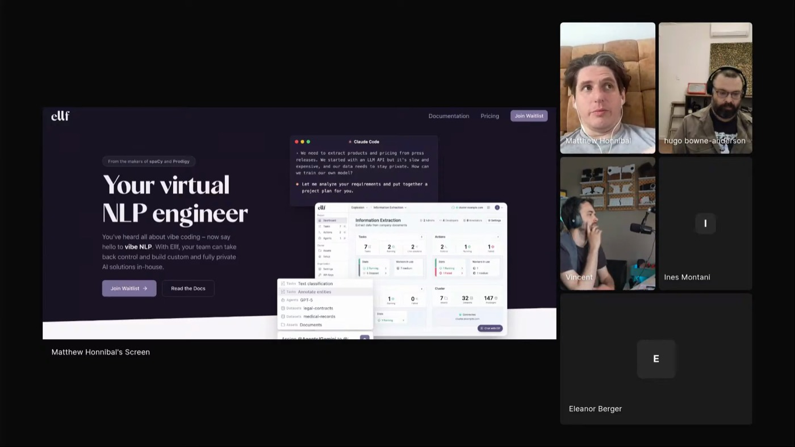

try-except
Reads a codebase and tightens every try/except so the try covers only what can fail and the except catches the right exception, no masked bugs.
 MATTHEW HONNIBAL
spaCy · EXPLOSION
ADVERSARIAL PASSES
.MD.TXT SKILLS
POVERTY OF EVIDENCE
MATTHEW HONNIBAL
spaCy · EXPLOSION
ADVERSARIAL PASSES
.MD.TXT SKILLS
POVERTY OF EVIDENCE
Matt makes the model attack its own code. Adversarial passes try to break what it just wrote, fix-up sweeps tighten the weak spots, short sessions keep his judgment in the loop. Models reward-hack toward short wins, bare excepts and false success, and nobody yet has the evidence to know which workflow actually helps.

"You get a compounding effect from velocity in this way, if you're doing it well."
The passes are adversarial: focused attempts to break the code before it ships, then fix-up sweeps over the weak spots. Never one big prompt he hopes comes out clean.
Models reward-hack toward short-term wins, bare excepts and plausible-but-false success, because reinforcement learning has a limited horizon. "One of the ways it can cheat the long-term objective for short-term gain is to introduce bare excepts." Inference doesn't happen all at once, so he makes it nibble, not bite. Short sessions keep him engaged: after the context window grew, his sessions got worse. "These are bad sessions. I'm not using myself well."
"You shouldn't install skills where you've only read the rendered markdown of it."
Reads a codebase and tightens every try/except so the try covers only what can fail and the except catches the right exception, no masked bugs.
Finds where production code is fragile and writes post-mortems for bugs a plausible future change could introduce. Aimed at the next editor, not today.
Introduces deliberate bugs one at a time and reports which ones no test caught, measuring how strong the test suite actually is.
His own collection, uploaded as .md.txt so you read exactly what the agent reads. No HTML comments hiding off-screen.
"It's all very eyeballed."
Matt's bigger bet is ELLF: Claude plus extension skills plus cluster compute, pointed at the work an NLP data team used to do. His example is telling the spaCy library apart from the Honda Spacy motorcycle in social mentions.
The agent plans the project, runs downloads on Kubernetes, creates annotation jobs, farms first-pass labeling to cheap agents, routes disagreements to human review, and runs experiments, while the developer owns the decisions. "We don't want this extremely high-autonomy concept", it's a developer-in-the-loop flow. He's looking for partner projects on the beta waitlist.
